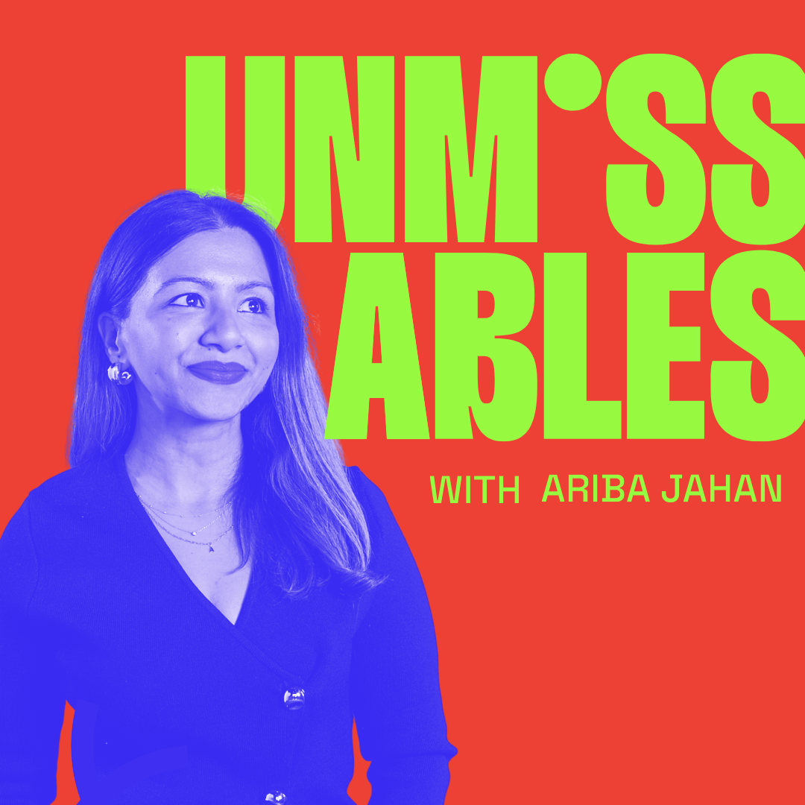
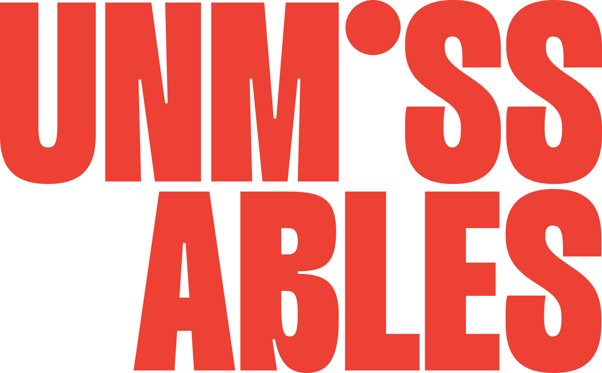
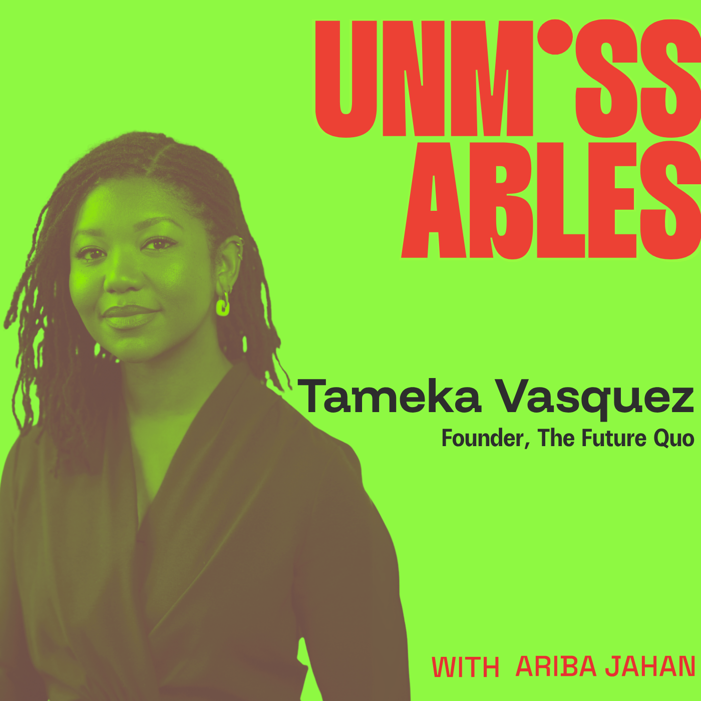
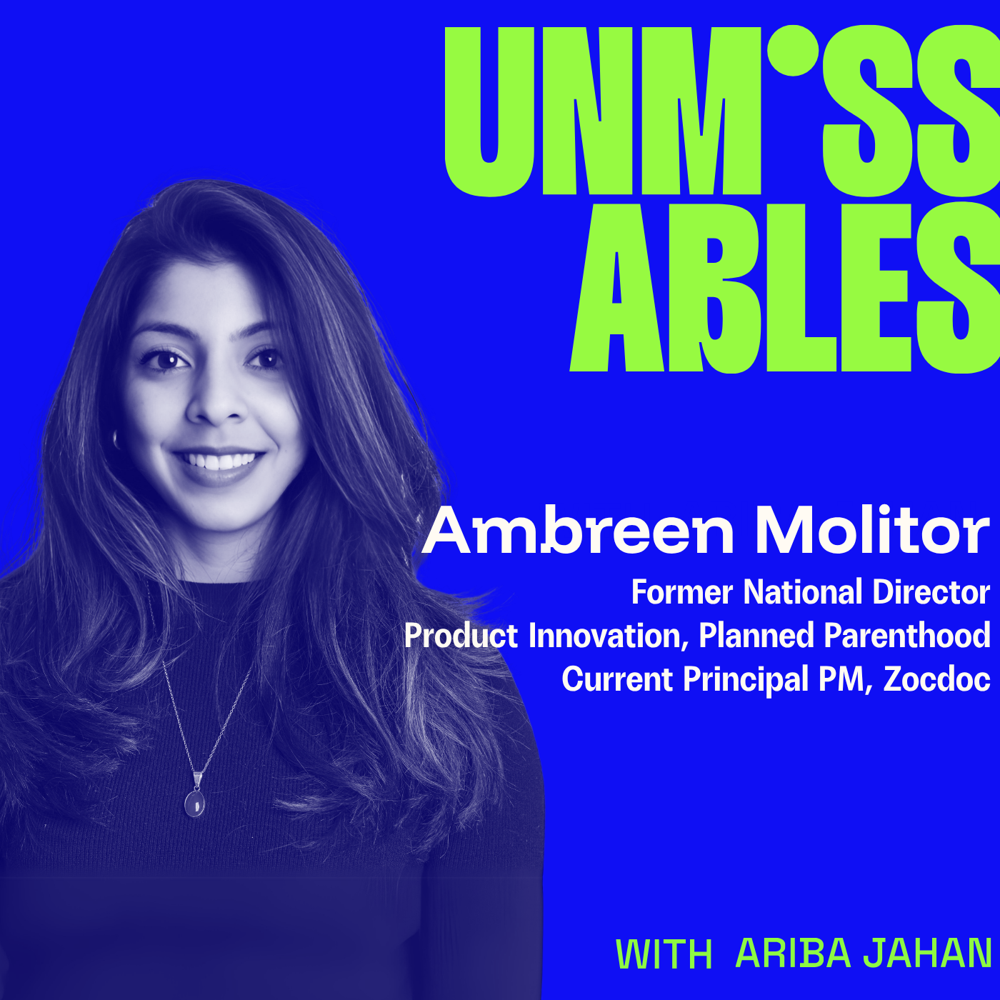
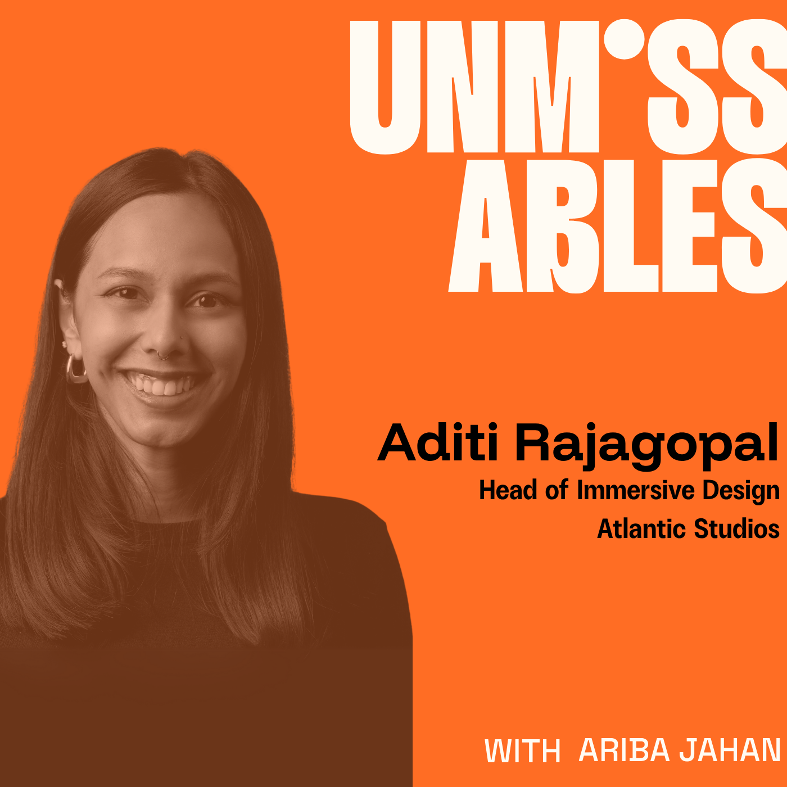
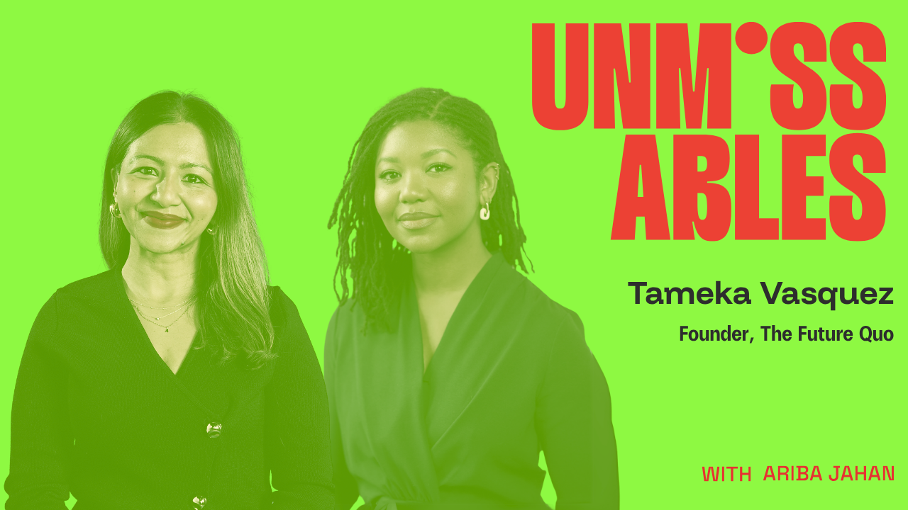
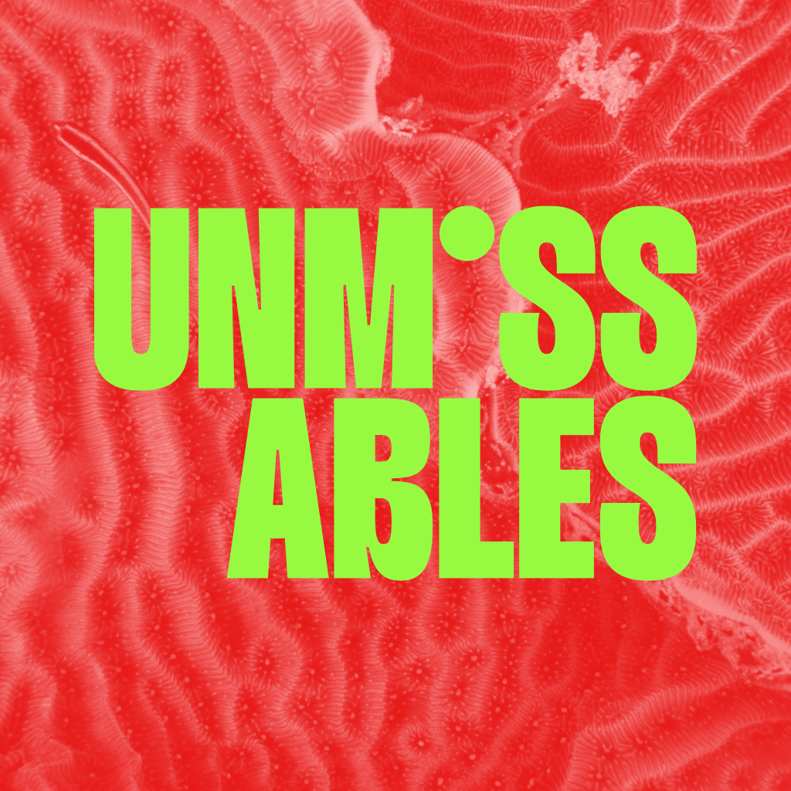

Unmissables
Unmissables is the world around my podcast and newsletter. The same colors and wordmark carry across both; people lead the podcast, and images from nature lead the newsletter.
Marks
Logo color
Primary logo

Secondary logoLogomark
A guest episode
Show identity
The main cover and guest series use the same wordmark, color, and portrait treatment.
Guest-cover series



Episode formats
The cover and video artwork use the same guest image at two different sizes.

Social series
Social designs by Christiana Wong.
Nature patterns
I use images that show patterns in nature alongside writing that looks for patterns in technology, culture, and society.

Cognitive Endurance: Reclaiming Our Agency in the Age of AI
Cognitive Endurance: Reclaiming Our Agency in the Age of AI
Nine principles for thinking, creating, and tending our mind palace.